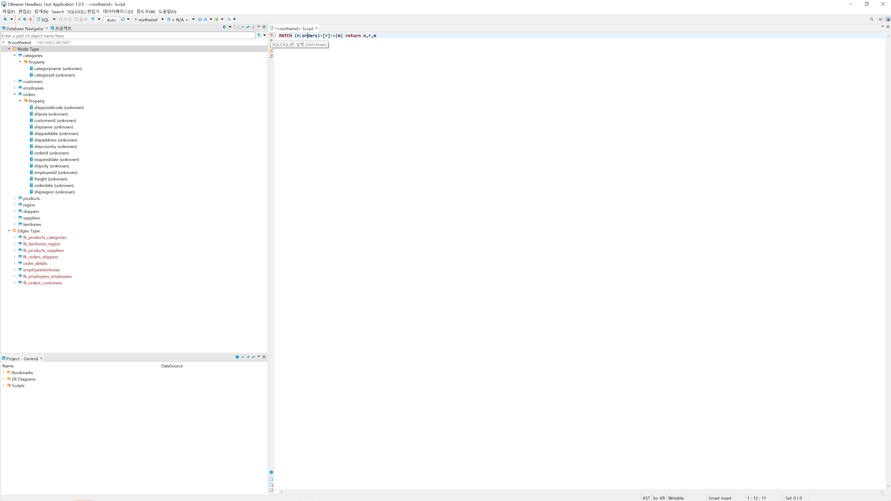

질의 편집기 관련¶
아래와 같이 질의 편집기 메뉴를 통해서 Query를 입력창 열 수 있다.
Query 입력창을 통해서 Query를 입력할 수 있으며, 입력 후 [>]{SQL(GQL) 실행} 버튼을 통해 Query를 실행 할 수 있다.
질의 변환기¶
TurboGraph++ 연결 시 아래 화면에 표시 된 것 처럼 질의편집기 상단에 질의 변환기가 표시된다.
전체 정점의 라벨과 속성, 간선의 타입과 속성을 선택 할 수 있으며, 지원하는 비교 연산자과 값을 입력 후 빨간 색으로 표시된 버튼을 사용하면 간단한 Cypher 질의로 변환 할 수 있다.
질의 지동완성 기능¶
질의 자동완성 기능은 질의 편집기에서 질의 입력 시 아래와 같은 기능을 지원합니다. 문자 입력시 자동 키워드를 제공하거나 <Ctrl + Space> 통해 기능이 제공된다.
- 정점, 간선 관련구문 사용시 Label, Type 검색기능
- 정점, 간선 선언 시 내부에서 Property List 검색 기능
- Property 선언 관련 구문 사용시 Property List 검색 기능
- Alias 관련 기능 제공 (Alias 나타내기 Alias 선택 시 Property List 등)
- 기타 지원하는 키워드(Keyword, Function 등) 정의
- 구문에 따른 다른 키워드 검색기능
- ‘*’ 사용시 전체 Property 입력기능 등